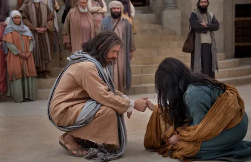

What is Repentance?

Repentance is a loving gift from Jesus Christ that allows us to change, grow, and become better each day.
When we repent, we recognize our mistakes, feel sincere sorrow, and turn to God for forgiveness.
“Yea, and as often as my people repent will I forgive them their trespasses against me.”
— Mosiah 26:30, Book of Mormon
Through repentance, we can find peace, healing, and a fresh start—no matter what has happened in the past.
Repentance is a joyful process that helps us draw closer to Jesus Christ and His love.